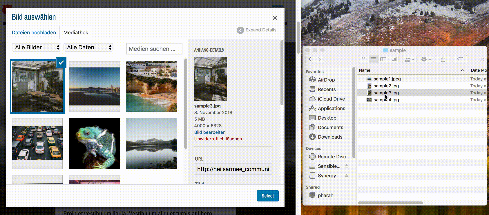
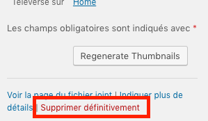

La médiathèque
Avant de pouvoir utiliser des images ou d'autres fichiers média sur votre site web, vous devez les télécharger de votre ordinateur dans la médiathèque WordPress de votre site web. Vous pouvez accéder à votre médiathèque soit dans le backend, soit dans le frontend, partout où vous avez la possibilité d'insérer des fichiers média. Pour accéder à la médiathèque à partir du backend, sélectionnez le point « Médias » dans la barre latérale :
Depuis le frontend, l’accès à la médiathèque s'effectue chaque fois que vous avez la possibilité d'insérer une image. Cliquez à l'endroit approprié sur le bouton :

Vous êtes maintenant dans la médiathèque où vous pouvez voir vos images et d’autres fichiers média répertoriés :
Télécharger de nouveaux fichiers média
Avant de pouvoir utiliser des fichiers média dans votre site web, vous devez les télécharger dans la médiathèque. La procédure la plus simple est de glisser-déposer vos fichiers média dans votre médiathèque :

Supprimer des fichiers média
Vous pouvez supprimer un fichier de la médiathèque dans n'importe quelle fenêtre de la médiathèque en sélectionnant le fichier correspondant et en cliquant sur le lien rouge « Supprimer définitivement » :
